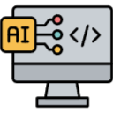

Inteligência Artificial na
Educação:
Conceitos, Exemplos, Ferramentas e Ética.

Resumo
A Inteligência Artificial (IA) tem se consolidado como uma das forças mais transformadoras na educação contemporânea,
reestruturando processos pedagógicos e de gestão. Este trabalho apresenta uma pesquisa acadêmica embasada em literaturas
indexadas em plataformas como Google Scholar e Consensus, visando mapear os conceitos fundamentais, aplicações
práticas, ferramentas de destaque e os dilemas éticos associados à Inteligência Artificial Educacional (EDAI) Abordam-se
os Sistemas Tutores Inteligentes (STI), a aprendizagem adaptativa e o Processamento de Linguagem Natural (PLN).
Analisam-se, adicionalmente, as implicações da Lei Geral de Proteção de Dados (LGPD), o viés algorítmico e a necessidade
de reestruturação das práticas de avaliação diante da proliferação de Modelos de Linguagem de Grande Porte (LLMs).
Conclui-se que a IA deve atuar de forma ética como recurso de amplificação do trabalho docente, mantendo a centralidade
humana e a equidade no ecossistema educacional.
Palavras-Chave: Inteligência Artificial Educacional. Aprendizagem Adaptativa. Ética em IA. LGPD. Tutoria Virtual.
Introdução
A Inteligência Artificial (IA) consolidou-se como uma das tecnologias mais transformadoras do século XXI, redefinindo dinâmicas
sociais, econômicas e educacionais. No âmbito da educação, a IA ultrapassa o papel de mero recurso tecnológico instrumental
para se tornar um catalisador de profundas mudanças pedagógicas, alterando as formas de ensinar, aprender e gerir ecossistemas
educacionais.
Com base em estudos indexados em bases acadêmicas como Google Scholar e a plataforma de sintetização científica Consensus,
este trabalho analisa os fundamentos teóricos da Inteligência Artificial Educacional (EDAI), mapeia suas aplicações e ferramentas
práticas no cotidiano escolar e examina criticamente os desafios éticos, regulatórios e pedagógicos inerentes à sua implementação no ensino contemporâneo.
Conceitos fundamentais da IA na educação
Inteligência Artificial Educacional (EDAI)
A Inteligência Artificial Educacional (EDAI) constitui um campo de pesquisa interdisciplinar situado na intersecção entre Ciência da Computação, Ciências Cognitivas, Psicologia da Aprendizagem e Pedagogia (BAKER, 2021). Seu objetivo central é o desenvolvimento de ambientes computacionais que não apenas transmitam conteúdos, mas compreendam os processos de modelagem cognitiva dos estudantes, adaptando a instrução em tempo real.
Aprendizagem de Máquina e Algoritmos Preditivos
A Aprendizagem de Máquina (Machine Learning - ML) fundamenta o processamento de grandes volumes de dados educacionais (Educational Data Mining - EDM). Algoritmos de aprendizado supervisionado e não supervisionado analisam padrões comportamentais, tempos de resposta e históricos de desempenho para identificar precocemente alunos com risco de retenção ou evasão escolar, permitindo intervenções pedagógicas preventivas e direcionadas.
Sistemas Tutores Inteligentes (STI)
Os Sistemas Tutores Inteligentes (STI) são softwares projetados para simular a instrução individualizada fornecida por um tutor humano especializado (LUCKIN et al., 2016). Estruturados a partir de três modelos primários — o Modelo do Domínio (conteúdo), o Modelo do Estudante (estado do conhecimento do aluno) e o Modelo Pedagógico (estratégias de ensino) —, os STI adaptam sequências de exercícios e fornecem andaimes cognitivos (scaffolding) de acordo com as necessidades identificadas.
Processamento de Linguagem Natural (PLN)
O Processamento de Linguagem Natural (PLN) possibilita a interpretação e a geração computacional da linguagem humana. Na educação, o PLN viabiliza desde a avaliação automatizada de produções textuais complexas até a criação de assistentes virtuais dialógicos capazes de responder dúvidas conceituais com alta precisão e coerência contextual.
Aplicações práticas e ferramentas exemplares
Ferramentas, funções e exemplos
| Categoria | Função Pedagógica | Exemplos Ferramentas |
|---|---|---|
| Aprendizagem Adaptativa | Ajuste dinâmico de ritmo, nivelamento de dificuldades e rotas personalizadas de estudo. | Khan Academy (Khanmigo), DreamBox Learning, Knewton |
| Tutoria Virtual Dialógica | Suporte 24/7 para elucidação de dúvidas, resumos, tradução e mediação conceitual. | ChatGPT, Claude, Google Gemini, Quizlet Q-Chat |
| Gestão e Avaliação | Correção automatizada de avaliações, feedback imediato e análise analítica de turmas. | Gradescope, Turnitin, Century Tech |
Desafios éticos e regulatórios
Privacidade de Dados e Segurança da Informação
A operação eficiente de modelos adaptativos requer a extração contínua de telemetria comportamental, históricos de erros e dados pessoais dos usuários. Em se tratando de crianças e adolescentes, a conformidade estrita com marcos normativos — como a Lei Geral de Proteção de Dados Pessoais (LGPD) no Brasil e o GDPR na União Europeia — torna-se imperativa para impedir o compartilhamento indevido ou a exploração comercial de perfis estudantis.
Vieses Algorítmicos e Equidade Educacional
Sistemas de inteligência artificial aprendem a partir de bases históricas que contêm pré-conceitos implícitos. Caso não haja auditabilidade e curadoria de dados, algoritmos de avaliação preditiva podem discriminar minorias raciais, socioeconômicas ou linguísticas, perpetuando desvantagens históricas no acesso a oportunidades educacionais.
Integridade Acadêmica e Transformação da Avaliação
A difusão de Modelos de Linguagem de Grande Porte (LLMs) levanta novos desafios à integridade acadêmica. Contudo, pesquisadores como Selwyn (2019) salientam que a resposta não reside no simples banimento de ferramentas digitais, mas na reestruturação das práticas de avaliação, migrando de tarefas de simples memorização ou reprodução para atividades voltadas ao pensamento crítico, síntese original e aplicação prática.

Conclusão
A Inteligência Artificial firma-se como um pilar fundamental da transformação educacional contemporânea, oferecendo instrumentos capazes de personalizar a aprendizagem, democratizar o suporte tutorial e otimizar processos administrativos. Entretanto, a eficácia pedagógica da IA depende criticamente da manutenção da centralidade humana no processo educativo. Conforme ressaltado nas diretrizes globais da UNESCO (2019), as ferramentas automatizadas devem atuar como amplificadoras das capacidades docentes, e não como substitutas da interação interpessoal, da empatia e da mediação pedagógica exercida pelos professores. A consolidação de um ecossistema educacional impulsionado por IA exige regulamentação ética sólida, proteção de dados robusta e investimento contínuo na formação digital de educadores e alunos.
Referências
BAKER, Ryan S. Artificial intelligence in education: brings learning to life. International Journal of Artificial Intelligence in Education , v. 31, n. 3, p. 452-470, 2021.
HOLMES, Wayne; BIALIK, Maya; FADEL, Charles. Artificial intelligence in education: promises and implications for teaching and learning Boston: Center for Curriculum Redesign , 2019.
LUCKIN, Rose et al. Intelligence unleashed: making artificial intelligence in education explicit. London: Pearson , 2016.
SELWYN, Neil. Should robots replace teachers? AI and the future of education. Cambridge: Polity Press , 2019.
UNESCO. Beijing consensus on artificial intelligence and education. Paris: UNESCO , 2019.